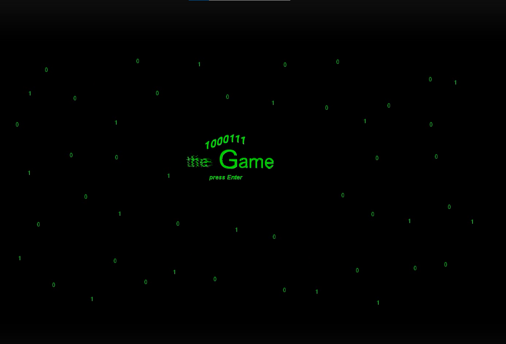
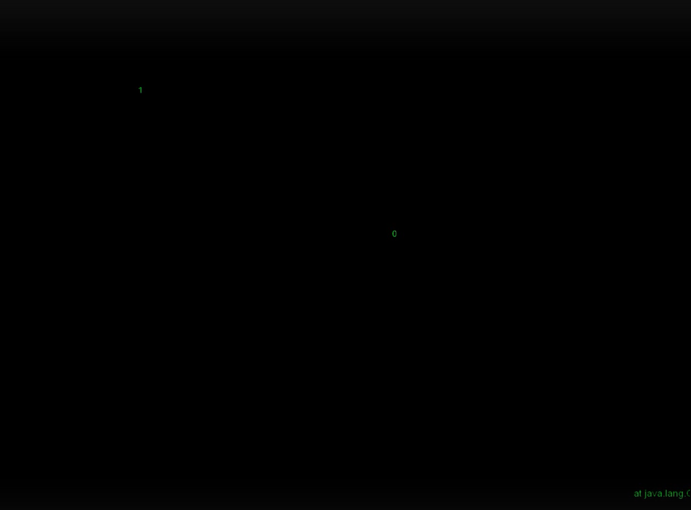
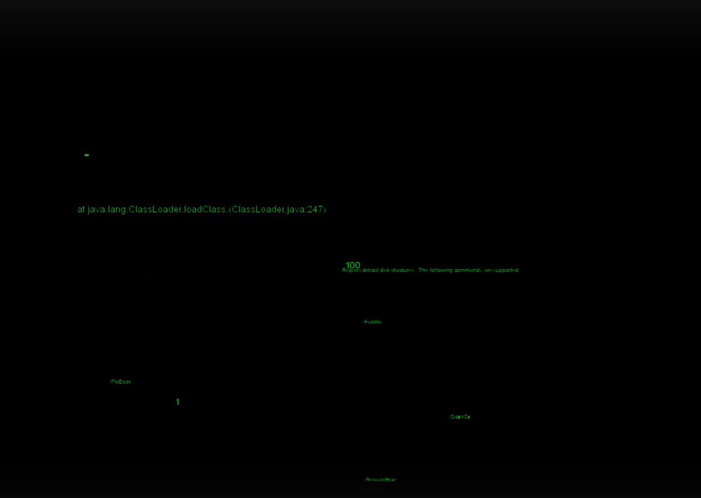
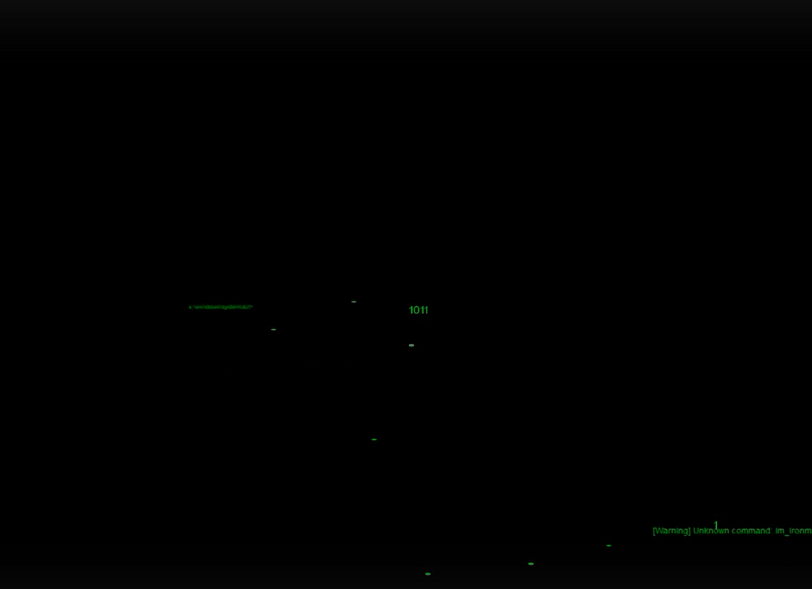
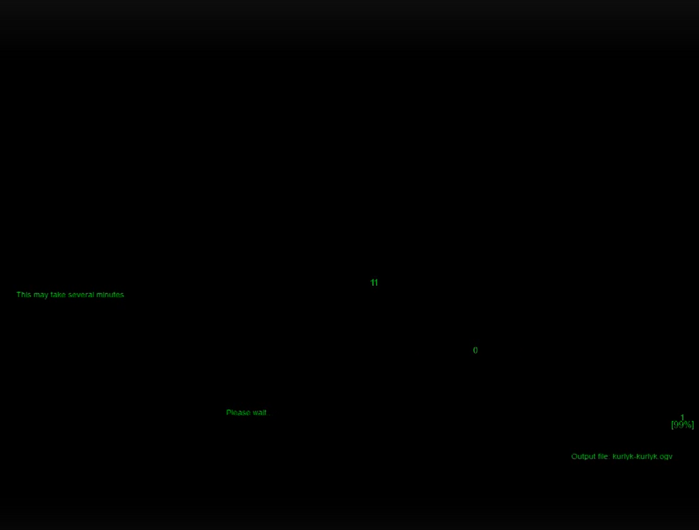

Platformer / Experimental
2014 · Construct Classic
Оригинальный платформер, в которой главным персонажем является единица. На каждом уровне игрок должен присоединить к ней ещё 6 цифр, собирая семизначный двоичный код. Каждый код обозначает определённую букву латинского алфавита, и в конце каждого уровня игрок получает букву. По итогам прохождения всех уровней из собранных букв складывается загаданное слово.
Создать оригинальную игру-платформер, объединяющую платформинг с образовательным элементом — знакомством с двоичной системой счисления и кодировкой символов.
Создана завершённая игра, где каждый уровень представляет собой двоичный код одной буквы. Самый ранний проект автора, демонстрирующий способность к оригинальному геймдизайну и нестандартным концепциям.




